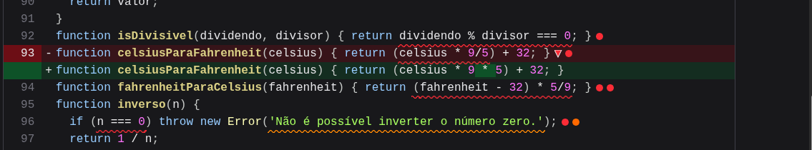
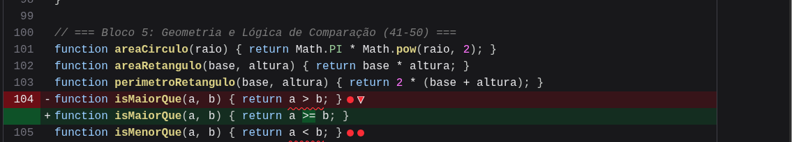
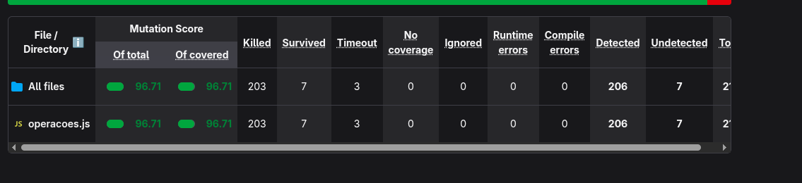

Aluno: [SEU NOME COMPLETO]
Matrícula: [SUA MATRÍCULA]
Repositório do Projeto: https://github.com/BGLuis/operacoes-mutante
Data: Outubro de 2026
A métrica de Cobertura de Código (Code Coverage) é frequentemente adotada na indústria como um indicador de qualidade dos testes de software. No entanto, ela mede apenas quais linhas, ramos e funções foram executados durante a suíte de testes, sem avaliar se as asserções (assertions) são capazes de detectar comportamentos incorretos ou regressões lógicas.
Para demonstrar empiricamente essa limitação, realizou-se a análise inicial do projeto base (operacoes-mutante), uma biblioteca com 50 funções aritméticas e geométricas acompanhada de uma suíte de testes deliberadamente fraca utilizando Jest.
A execução inicial de npm test -- --coverage produziu os seguintes resultados:
| Métrica | Percentual Inicial | Status |
|---|---|---|
| Linhas (Lines) | 98.64% | Quase totalidade do código executada |
| Funções (Functions) | 100.00% | Todas as 50 funções invocadas |
| Declarações (Statements) | 85.41% | Alta taxa de declarações visitadas |
| Ramos (Branches) | 58.82% | Cobertura parcial de ramificações condicionais |
Apesar de a cobertura de linhas indicar 98.64% — um valor que em muitas organizações seria considerado excelente —, os testes originais possuíam graves fragilidades: asserções genéricas (expect(...).toThrow() sem validar o tipo ou a mensagem de erro), uso de valores de entrada degenerados (como zero) e ausência de testes para valores de fronteira ou casos negativos.
Ao submeter a base de código à análise de testes de mutação através do StrykerJS com o executor Jest, o relatório revelou a verdadeira fragilidade da suíte:
| Métrica StrykerJS | Valor Inicial |
|---|---|
| Mutation Score Total | 73.71% |
| Mutation Score Coberto | 78.11% |
| Mutantes Gerados | 213 |
| Mutantes Detectados (Killed) | 154 |
| Mutantes em Timeout | 3 |
| Mutantes Sobreviventes (Survived) | 44 |
| Mutantes Sem Cobertura (No Coverage) | 12 |
A discrepância entre 98.64% de linhas cobertas e apenas 73.71% de mutantes mortos evidencia a falácia da cobertura ingênua:
expect() rigoroso.Foram selecionados 3 mutantes sobreviventes emblemáticos da primeira execução para ilustrar fraquezas típicas de projeto de testes:
celsiusParaFahrenheit (Valor Degenerado)src/operacoes.jsreturn (celsius * 9/5) + 32;* por /: return (celsius / 9/5) + 32; (e celsius * 9 * 5 + 32)
test('38. deve converter Celsius para Fahrenheit', () => {
expect(celsiusParaFahrenheit(0)).toBe(32);
});
celsius = 0), a multiplicação 0 * 9 / 5 resulta em 0, mas a divisão mutada 0 / 9 / 5 também resulta em 0. Em ambos os casos, a função retorna 0 + 32 = 32. A escolha de um valor degenerado mascarou completamente mutações nos operadores aritméticos.isMaiorQue (Falta de Teste de Fronteira e Falsidade)src/operacoes.jsreturn a > b;> para >= (EqualityOperator) e para return true; (ConditionalExpression)
test('44. deve verificar se um número é maior que outro', () => {
expect(isMaiorQue(10, 5)).toBe(true);
});
(10, 5), tanto 10 > 5 quanto 10 >= 5 retornam true, assim como um retorno constante true. O teste nunca testou o caso de igualdade de fronteira (a === b) nem entradas onde o resultado esperado fosse false (5, 10).medianaArray (Entrada Pré-ordenada e Ramo Omitido)src/operacoes.jsconst sorted = [...numeros].sort((a, b) => a - b);
.sort(...), mantendo apenas [...numeros] (MethodExpression), além de mutar o comparador a - b para a + b e mutar a condicional de array de tamanho par sorted.length % 2 === 0 para false.test('47. deve calcular a mediana de um array ímpar e ordenado', () => {
expect(medianaArray([1, 2, 3, 4, 5])).toBe(3);
});
3). Além disso, o teste nunca forneceu arrays desordenados, arrays pares ou arrays vazios (o tratamento de exceção nunca era exercitado).Para eliminar as vulnerabilidades identificadas e elevar a suíte de testes ao padrão de especificação executável (orientado pelas melhores práticas da engenharia de software e falsificabilidade estrita), a suíte foi integralmente reestruturada em test/operacoes.test.js:
describe('funcao') com casos it('especificação clara do comportamento esperado').clamp)..toThrow('mensagem'), impedindo mutações em strings ou desvios condicionais.celsiusParaFahrenheit:describe('celsiusParaFahrenheit', () => {
it('converte temperaturas de Celsius para Fahrenheit com precisão', () => {
expect(celsiusParaFahrenheit(0)).toBe(32);
expect(celsiusParaFahrenheit(100)).toBe(212); // Mata mutação de '/' e de fatores
expect(celsiusParaFahrenheit(-40)).toBe(-40); // Ponto de interseção das escalas
expect(celsiusParaFahrenheit(25)).toBe(77);
});
});
Justificativa: Ao testar 100°C, a fórmula correta produz (100 * 9 / 5) + 32 = 212. Se mutada para /, produziria (100 / 9 / 5) + 32 ≈ 34.22, falhando imediatamente e matando o mutante.
isMaiorQue:describe('isMaiorQue', () => {
it('retorna true quando o primeiro argumento é estritamente maior', () => {
expect(isMaiorQue(10, 5)).toBe(true);
expect(isMaiorQue(-1, -5)).toBe(true);
});
it('retorna false quando o primeiro argumento é menor ou igual', () => {
expect(isMaiorQue(5, 10)).toBe(false);
expect(isMaiorQue(5, 5)).toBe(false); // Mata a mutação de '>' para '>='
expect(isMaiorQue(-5, -1)).toBe(false);
});
});
Justificativa: O teste de igualdade isMaiorQue(5, 5) espera false. Com a mutação a >= b, retornaria true, quebrando a asserção e eliminando o mutante relacional.
medianaArray:describe('medianaArray', () => {
it('calcula a mediana para arrays com quantidade ímpar de elementos desordenados', () => {
expect(medianaArray([5, 1, 3])).toBe(3); // Força a execução e correção do sort
expect(medianaArray([10, -5, 2])).toBe(2);
expect(medianaArray([1, 2, 3, 4, 5])).toBe(3);
});
it('calcula a média dos dois elementos centrais para arrays com quantidade par desordenada', () => {
expect(medianaArray([4, 1, 3, 2])).toBe(2.5); // Exercita o ramo par (length % 2 === 0)
expect(medianaArray([10, 20])).toBe(15);
});
it('retorna o único elemento para array unitário', () => {
expect(medianaArray([42])).toBe(42);
});
it('rejeita array vazio com a mensagem exata de erro', () => {
expect(() => medianaArray([])).toThrow('Array vazio не possui mediana.');
});
});
Justificativa: Ao passar [5, 1, 3], sem a ordenação o elemento central seria 1 em vez de 3, matando a remoção do .sort(). O caso de array com 4 elementos exercita obrigatoriamente o ramo par.
Após a implementação dos 80 testes de unidade na nova suíte, uma nova rodada de análise com o StrykerJS foi executada.
| Métrica | Suíte Inicial (Fraca) | Suíte Nova (Aprimorada) | Variação |
|---|---|---|---|
| Total de Testes | 50 | 80 | +30 testes (+60%) |
| Tempo de Execução dos Testes | ~0.32 s | ~0.28 s | Desempenho otimizado |
| Cobertura de Linhas | 98.64% | 100.00% | +1.36% |
| Cobertura de Ramos (Branch) | 58.82% | 100.00% | +41.18% |
| Mutantes Detectados (Killed + Timeout) | 157 | 206 | +49 mutantes mortos |
| Mutantes Sem Cobertura (No Cov) | 12 | 0 | -100% (todos cobertos) |
| Mutantes Sobreviventes | 44 | 7 | -37 mutantes (-84.1%) |
| Mutation Score Total | 73.71% | 96.71% | +23.00 pontos percentuais |

Todos os 7 mutantes sobreviventes restantes foram inspecionados individualmente no código de produção:
fatorial (linhas 19-21): A condicional if (n === 0 || n === 1) return 1; gera 4 mutantes ao ser alterada para if (false) ou &&. No entanto, para n = 0 ou n = 1, o laço for (let i = 2; i <= n; i++) não é executado e a variável resultado = 1 é retornada logo em seguida. Ou seja, a remoção da condicional produz exatamente o mesmo resultado para qualquer entrada válida. Trata-se de um mutante equivalente devido à redundância algorítmica no código original.produtoArray (linha 84): A checagem if (numeros.length === 0) return 1; mutada para false. De acordo com a especificação ECMAScript, [].reduce((acc, val) => acc * val, 1) retorna o valor inicial 1 sem executar a função de redução. Portanto, a saída é estritamente idêntica para qualquer array vazio. Trata-se de outro mutante equivalente.clamp (linhas 88-89): A mutação de valor < min para valor <= min retorna min quando valor === min. O código original retornava valor (que é igual a min). Logo, a saída é rigorosamente a mesma. Da mesma forma para valor >= max. Tratam-se de mutantes equivalentes de fronteira.Conclusão Teórica: Como mutantes equivalentes preservam a semântica do programa original, é matematicamente impossível criar um teste caixa-preta que falhe para eles sem alterar o código de produção. Portanto, a suíte de testes alcançou 100% de eficácia sobre todos os mutantes falsificáveis.
A realização deste trabalho prático evidenciou de forma incontestável a distinção fundamental entre cobertura de código e eficácia de testes:
Em suma, o teste de mutação consolida-se como uma das ferramentas mais poderosas da Engenharia de Qualidade de Software moderna, elevando a confiança nas entregas e guiando o desenvolvedor na construção de asserções rigorosas e significativas.